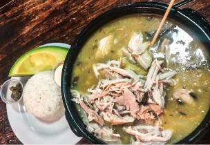

El nombre del ajiaco tiene varias teorías. Algunos dicen que se llama así porque la receta inicial llevaba ají. Otros afirman que “ajiaco” se usaba para referirse a sopas y cocidos en general. También hay quienes creen que el nombre proviene de una leyenda indígena. Según esta leyenda, el plato fue bautizado combinando los nombres del Cacique Aco y su esposa Aj. A pesar de las diferencias sobre el nombre, todos coinciden en lo exquisito que es. El ajiaco es una sopa espesa con tres tipos de papa, cebolla, maíz, pollo, crema de leche y alcaparras. Generalmente se sirve con dulce de mora como postre. Aunque originalmente solo se preparaba en ocasiones especiales, hoy es una delicia típica de Bogotá y Cundinamarca que puedes disfrutar en todo el país.
